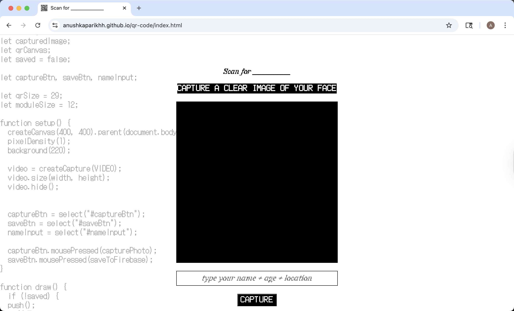
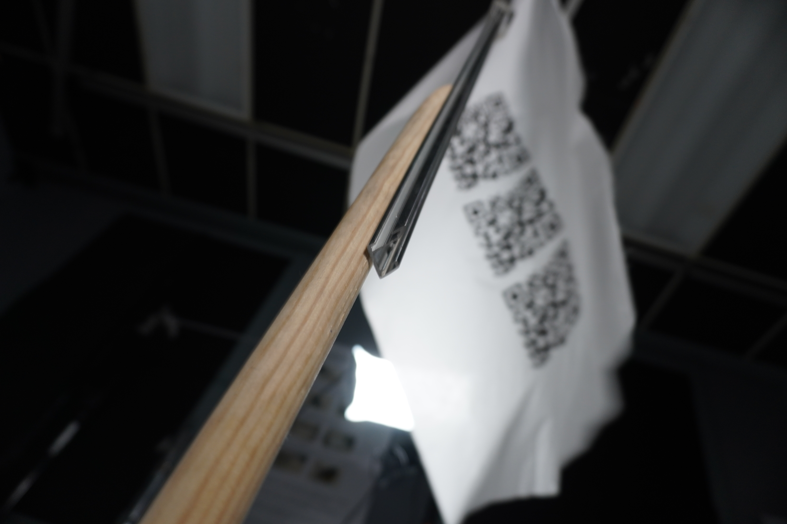

The Scan for ____________ campaign considers how society has become dependent
and compliant to technology despite its ambiguity and lack of “informative” design.
This campaign is for those who mindlessly scanned the qr code, the user
that interacts with this technology but failing to consider or learn of its ethical
implications. Technology comes in many complex forms and origins that must be
questioned and investigated to avoid compliant control of society. The goal of this
campaign is to achieve a more mindful society that encourages curiosity within the
ethics of technology and the dissemination of information via “accessible” forms
of design.

